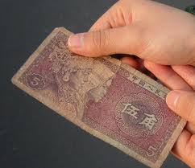
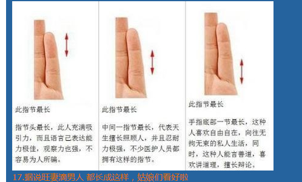
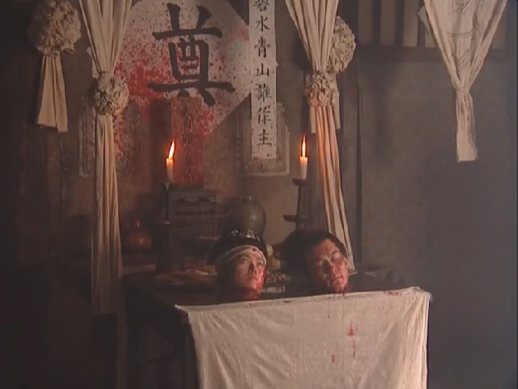

Conversation with 81184027 at Sun 18 May 2014 04:48:05 PM CST on 154115835 (webqq)
(04:40:30 PM) 福建-福州&水浒: :pray:
(04:40:30 PM) 福建-福州&水浒: :pray:
(04:51:04 PM) 光: 有个老魔鬼看到人间的生活过得太幸福了，他说：“我们要去扰乱一下，要不然魔鬼就不存在了。”
他先派了一个小魔鬼去扰乱一个农夫。因为他看到那农夫每天辛勤地工作，可是所得却少得可怜，但他还是那么快乐，非常知足。
小魔鬼就开始想，要怎样才能把农夫变坏呢？他就把农夫的田地变得很硬，让农夫知难而退。
那农夫敲半天，做得好辛苦，但他只是休息一下，还是继续敲，没有一点抱怨。小魔鬼看到计策失败，只好摸摸鼻子回去了。
老魔鬼又派了第二个去。第二个小魔鬼想，既然让他更加辛苦也没有用，那就拿走他所拥有的东西吧！
那小魔鬼就把他午餐的面包跟水偷走，他想，农夫做得那么辛苦，又累又饿，却连面包跟水都不见了，这下子他一定会暴跳如雷！
农夫又渴又饿地到树下休息，想不到面包跟水都不见了！“不晓得是哪个可怜的人比我更需要那块面包跟水？如果这些东西就能让他得温饱的话，那就好了。”又失败了，小魔鬼又弃甲而逃。
老魔鬼觉得奇怪，难道没有任何办法能使这农夫变坏？就在这时第三个小魔鬼出来了。他对老魔鬼讲：“我有办法，一定能把他变坏。”
小魔鬼先去跟农夫做朋友，农夫很高兴地和他作了朋友。因为魔鬼有预知的能力，他就告诉农夫，明年会有干旱，教农夫把稻种在湿地上，农夫便照做。结果第二年别人没有收成，只有农夫的收成满坑满谷，他就因此而富裕起来了。
小魔鬼又每年都对农夫说当年适合种什么，三年下来，这农夫就变得非常富有。
他又教农夫把米拿去酿酒贩卖，赚取更多的钱。慢慢地，农夫开始不工作了，靠着经济贩卖的方式，就能获得大量金钱。
有一天，老魔鬼来了，小魔鬼就告诉老魔鬼说：“您看！我现在要展现我的成果。这农夫现在已经有猪的血液了。”只见农夫办了个晚宴，所有富有的人都来参加；喝最好的酒，吃最精美的餐点，还有好多的仆人侍候。他们非常浪费地吃喝，衣裳零乱，醉得不省人事，开始变得像猪一样痴肥愚蠢。
“您还会看到他身上有着狼的血液。”小魔鬼又说。这时，一个仆人端着葡萄酒出来，不小心跌了一跤。
农夫就开始骂他：“你做事这么不小心！”“唉！主人，我们到现在都没有吃饭，饿得浑身无力。”
“事情没有做完，你们怎么可以吃饭！”
老魔鬼见了，高兴地对小魔鬼说:“唉！你太了不起！你是怎么办到的？”
小魔鬼说：“我只不过是让他拥有比他需要的更多而已，这样就可以引发他人性中的贪婪。”
心若改变，你的态度跟着改变；
态度改变，你的习惯跟着改变；
习惯改变，你的性格跟着改变；
性格改变，你的人生跟着改变。
(04:52:00 PM) lost message from #105326 to #105328
(04:52:17 PM) 福建-福州&水浒: ？？？
(04:52:29 PM) 光: 老魔鬼见了，高兴地对小魔鬼说:“唉！你太了不起！你是怎么办到的？”
小魔鬼说：“我只不过是让他拥有比他需要的更多而已，这样就可以引发他人性中的贪婪。”
(04:59:41 PM) 上善若水: 我来了
(04:59:49 PM) 上善若水: 不用手机了
(04:59:50 PM) 上善若水: 哈哈
(05:00:04 PM) 上善若水: 我看谁还敢咬我
(05:00:08 PM) 上善若水: :D
(05:01:11 PM) 光: :face14:
(05:00:49 PM) 福建-福州&水浒: :O
(05:01:21 PM) 福建-福州&水浒: 宽带装好了？
(05:01:26 PM) lost message from #105338 to #105340
(05:01:41 PM) 福建-福州&水浒: :handclap:
(05:01:29 PM) 上善若水: 弄好了
(05:01:34 PM) 上善若水: 历时半年
(05:01:54 PM) 福建-福州&水浒: 怎么不包一年呢
(05:02:17 PM) 上善若水: 从去年就开始报装了
(05:02:26 PM) 上善若水: 一直推这里没资源
(05:02:36 PM) 上善若水: 电信，联通移动
(05:02:36 PM) 福建-福州&水浒: 噢
(05:02:39 PM) 上善若水: 都找了
(05:02:45 PM) 福建-福州&水浒: 很偏僻的地方？
(05:02:54 PM) 上善若水: 害我收发邮件都用手机
(05:03:02 PM) 上善若水: 来回转好几次
(05:03:05 PM) 上善若水: 不是呀
(05:03:09 PM) 上善若水: 县城边上
(05:03:13 PM) 福建-福州&水浒: 花了多少铜板
(05:03:22 PM) 上善若水: 一千六百多
(05:03:28 PM) 福建-福州&水浒: ～～～
(05:03:35 PM) 福建-福州&水浒: ;@
(05:04:02 PM) 福建-福州&水浒: 被坑了吧，半年这个价;@？
(05:04:10 PM) 上善若水: 一年的
(05:04:19 PM) 上善若水: 每月还交一百多
(05:04:24 PM) 上善若水: 财务去办的
(05:04:26 PM) 福建-福州&水浒: 哦
(05:04:30 PM) 上善若水: 送了她两手机
(05:04:36 PM) 上善若水: 二十M
(05:04:40 PM) 福建-福州&水浒: 装电信的
(05:04:43 PM) 上善若水: 十二M电视
(05:04:45 PM) 福建-福州&水浒: 是吧
(05:04:48 PM) 上善若水: 光纤的
(05:04:50 PM) 上善若水: 还行
(05:05:05 PM) 福建-福州&水浒: 光纤上网快
(05:05:58 PM) lost message from #105370 to #105372
(05:05:30 PM) 福建-福州&水浒: :D
(05:05:14 PM) 上善若水: 听歌
(05:05:21 PM) 上善若水: 这也是最爱的
(05:05:26 PM) 上善若水: :D
(05:06:06 PM) 上善若水: 问：“五毛”的工作职责是什么？
答：以普通网民的身份，发表与中央政丨府（或各级行政机关）观点一致或相仿的内容，或采取其他网络传播策略，来试图达到影响网络舆论、引导网络舆论和的目的。其主要职责有——
1、维护中央及地方政丨府正面形象；
2、消除并预防突发事件的负面影响；
3、监控网络舆情；
4、防范意识形态渗透，维护执政安全；
5、营造和谐稳定的网络氛围；
5、每周向中央汇报舆情，提供决策参考信息；
(05:06:15 PM) 上善若水: 扫盲
(05:06:20 PM) 上善若水: :D
(05:06:36 PM) 上善若水: 问：“五毛”的工作目的是什么？
1、消灭雇主的一切负面消息
2、没有民意，制造民意
3、有民意，但民意不符合雇主期望，则制造民意
(05:06:50 PM) 上善若水: 问：什么人最容易成为“五毛”？
答：包罗万象，任何有上网条件的人通过竞聘都可能成为专职或兼职评论员。常见的兼职评论员一般是——论坛版主；街道办事处、社区、居委会工作人员；报社、网站初级记者；大学三、四年级学生；学生处干部；党校学生、网络写手；党内退休干部、职工；教丨师；文化、教育、宣传体系下的行政或事业单位职员。
(05:07:03 PM) 福建-福州&水浒: ～～～～～～
(05:09:06 PM) lost message from #105380 to #105384
(05:08:42 PM) 福建-福州&水浒: 党内退休干部属另一类 自干五
(05:08:31 PM) 上善若水: 问：五毛有逻辑吗？
答：没有！或者他们的逻辑是另一种逻辑。用他们的话来说，世界上有两种逻辑，一种是逻辑，一种是中国逻辑。
举例说明——
百姓：这鸡蛋真难吃。
五毛：有本事你下个好吃的蛋来。
百姓：这鸡蛋真难吃。
五毛：再难吃也是自己家的鸡下的蛋，凭这个就不能说难吃。
百姓：这鸡蛋真难吃。
五毛：比前年的蛋已经进步很多了。
百姓：这鸡蛋真难吃。
五毛：你就是吃这鸡蛋长大的，你有什么权力说这蛋不好吃？
百姓：这鸡蛋真难吃。
五毛：自己家鸡下的蛋都说不好吃，你还是不是中国人！
百姓：这鸡蛋真难吃。
五毛：隔壁家那鸭蛋更难吃，你咋不说呢？
百姓：这鸡蛋真难吃。
五毛：嫌难吃就别吃，滚去吃隔壁的鸭蛋吧。
百姓：这鸡蛋真难吃。
五毛：鸭蛋是好吃 ，可是不符合我们家的具体情况。
百姓：这鸡蛋真难吃
五毛：凡事都有个过程，现在还不是吃鸭蛋的时候。
百姓：这鸡蛋真难吃。
五毛：光抱怨有什么用，有这个时间还不如努力赚钱买鸡！
百姓：这鸡蛋真难吃。
五毛：心理阴暗，连鸡蛋不好吃也要发牢骚。
百姓：这鸡蛋真难吃。
五毛：世界上没有绝对的好蛋，美国鸡蛋好吃，你去吧！
百姓：这鸡蛋真难吃。
五毛：我们养鸡场处于初级阶段，必须坚持基本养鸡方法二十年不动摇！
百姓：这鸡蛋真难吃。
五毛：难吃的鸡蛋是极少数，绝大多数鸡蛋是好的，是优秀的，是经得起考验的！
百姓：这鸡蛋真难吃。
五毛：小心被别有用心的鸡利用，你真傻！
百姓：这鸡蛋真难吃。
五毛：老百姓不关心鸡蛋还是鸭蛋，老百姓只关心有没有蛋吃
百姓：这鸡蛋真难吃。
五毛：祖宗三代都是吃这个鸡蛋长大的，你竟然敢说这个鸡蛋难吃？
百姓：这鸡蛋真难吃。
五毛：其实鸭蛋是个巨大的阴谋，试图颠覆我们家
百姓：这鸡蛋真难吃。
五毛：没有XXX，你连这鸡蛋都吃不上
(05:09:35 PM) lost message from #105386 to #105386
(05:09:52 PM) 上善若水: :D
(05:09:42 PM) 上善若水: 问：遇到“五毛”怎么办？答：请他（她）拿好，送他（她）离开
(05:10:02 PM) 上善若水: 算了，还是和谐
(05:10:11 PM) 上善若水: 这是读书群
(05:10:23 PM) 福建-福州&水浒: 和谐和谐
(05:10:23 PM) 福建-福州&水浒: :D
(05:10:28 PM) 上善若水: 讨论音乐，文学，
(05:10:34 PM) 上善若水: 电影
(05:10:53 PM) 上善若水: 今天下午是混一下午了
(05:10:36 PM) 光: 没关系
(05:10:40 PM) 光: 这是社会学
(05:11:03 PM) 上善若水: 一月上二十八天了
(05:11:07 PM) 光: 生活中有的都可以谈
(05:11:38 PM) 光: 言之有物，言之有据
(05:11:40 PM) 光: 就可以了
(05:11:22 PM) 福建-福州&水浒: 喜欢
(05:12:08 PM) lost message from #105401 to #105406
(05:12:04 PM) 福建-福州&水浒: :)
(05:11:33 PM) 上善若水: 热热闹闹
(05:11:41 PM) 上善若水: 忘记烦恼
(05:11:48 PM) 上善若水: 没有网的日子
(05:12:01 PM) 上善若水: 每天都玩游戏打发日子
(05:12:11 PM) 上善若水: 手游
(05:12:51 PM) 福建-福州&水浒: 发觉我最近手机控了
(05:12:55 PM) 上善若水: 我也有几个讨论时政的群
(05:12:57 PM) 上善若水: 民主
(05:13:07 PM) 上善若水: 有些都封掉了
(05:13:23 PM) 福建-福州&水浒: 五毛干的
(05:13:33 PM) 上善若水: 是呀
(05:13:33 PM) 福建-福州&水浒: 因为要和谐
(05:13:45 PM) 上善若水: 他们言词激烈
(05:14:05 PM) 上善若水: 五毛受不了，就举报
(05:15:03 PM) 光: 哈维尔《对话守则》 1.对话的目的是寻求真理，不是为了斗争
2.不做人身攻击
3.保持主题
4.辩论时要用证据
5.不要坚持错误不改
6.要分清对话与只准自己讲话的区别
7.对话要有记录
8.尽量理解对方
(05:15:15 PM) 光: 按这个为守则谈
(05:15:19 PM) 光: 就没问题
(05:15:33 PM) 光: 2.不做人身攻击
(05:15:43 PM) 光: 4.辩论时要用证据
(05:15:48 PM) 光: 8.尽量理解对方
(05:16:06 PM) 上善若水: 恩好，有时做来着实不易
(05:15:53 PM) 光: 嗯
(05:16:30 PM) 福建-福州&水浒: 五毛党不会认同这些观点滴
(05:16:28 PM) 光: 先要求自己做到
(05:16:44 PM) 光: 再去影响对方
(05:16:52 PM) 上善若水: 不过我总也觉得
(05:17:38 PM) lost message from #105430 to #105430
(05:17:02 PM) 上善若水: 天空花开也是受害者
(05:17:18 PM) 上善若水: 相互包容
(05:17:35 PM) 上善若水: 一年没有尽情上网了
(05:17:57 PM) 上善若水: 以前在微博上
(05:17:47 PM) 光: 嗯
(05:17:57 PM) 光: 求同存异
(05:18:04 PM) 光: 君子和而不同
(05:22:25 PM) 光: 六十年来的中国教育
雷一宁
2011年1月 炎黄春秋网刊外稿
钱理群先生为我写的书序《向“伟大的中国女性”脱帽致敬》（注：见《往事微痕》第23期〈雷一宁专集〉，本文所引我的文章，均出自此专集），我早已看到。拜读之后，心里有许多话要说，可是由于疾病和治病，身体和思想都处于半麻木状态，加之这些年的“脱胎换骨”，思想也早已处于僵化状态，始终未能把内心的想法理出个头绪。这些天，翻了翻手头的鲁迅先生和李慎之先生的著作，才渐渐得到一点儿灵感。
钱先生经历过“整风反右”和文化大革命，对鲁迅先生有深入的研究，他和我一样，也是个孩儿王--教师，对中国教育的历史和现状有深刻的了解，铁流先生请他为我写书序，再合适不过了。但他称我为“伟大的女性”，我实在不敢当，我只是个平凡的女人，写文章的目的，只是为了悲剧不再重演，为了子孙后代不再遭遇我们曾经遭遇过的厄运。保护孩子，是女人的本能。记得在我当学生时，老师讲巴黎公社历史时，讲过一幅名为“巴黎公社社员墙”的浮雕，画面很简单，只是一个（面对反动势力）伸开双臂保护她身后的许多孩子的女人。当时老师未能展示实物，哪怕是一张照片，但他形象的描绘使画面清晰地呈现在我脑际，至今不忘。现在，我要履行的就是这个对女人来说再平凡不过的职责。几十年来，我，作为一个母亲，没能把“爱”给予孩子们（包括我的儿女）；作为一个“教书匠”，只是身不由己地做了无产阶级政治/“党”的喉舌，我欠了孩子们太多太多。
作为一个读过几本书的女人，我深深知道几千年来女性的厄运，也耳闻目睹了现当代中国女性的遭遇，还亲自品赏了中国女人的苦难，深知女人要真正解放，正所谓“路漫漫其修远兮”！前巴基斯坦女总理碧娜芝·布托，受过良好的西式教育，在事业上不亚于男性，却按传统做法把自己的婚姻大事交由母亲决定和包办，婚后对丈夫又十分顺从，以至自己的政治生涯甚至生命都葬送在这贪腐的夫君手里；日本皇太子德仁的妻子小和田雅子，也受过良好的西式教育，精通六国语言，婚前便是日本外务省的明日之星，可婚后却为能否为皇室传宗接代而受尽委屈，以至罹患了严重的忧郁症……她们，地位够高的了，读的新书够多的了，却仍然逃不脱厄运！这典型地表明，女人，尤其是东方女人的命运至今没有改变，用李慎之先生的说法，那就是“五四那点启蒙的力量实在不足以撼动中国两千多年根深蒂固的专制主义传统”。我之所以忍着往伤口上撒把盐的疼痛回忆这些往事，只是为了做一块漫漫长路上的踏脚石，使后人少走些弯路。为了写得更典型集中，我曾想把我自己、沈巧珍和另外几个女右派融会贯通写到同一篇文章中，但在快要成文时，有关的人严正地提出，这会给她的家庭带来伤害，不同意我写，而且文章也显得冗长。于是我把有关的内容删除，并把一篇文章分成几篇，不过所表达的仍是一个显而易见的思想，即马克思的这句话：“每个了解一点历史的人也知道，没有妇女的酵素，就不可能有伟大的社会变革。社会的进步可以用女性的社会地位来精确地衡量。”
生儿育女是女人的天赋使命，有句俗话，“孩子是女人身上掉下来的肉”，写女人，不可避免要牵涉到孩子。试想，“爱”这个造物主赋予人类的最原始最具体的人性，是在家庭里，在抚育子女的过程中，在父母亲主要是母亲的“爱”的熏陶下形成的。可中国的实际情况是怎样的呢？鲁迅在《灯下漫笔》中，引述了中国自古以来就有的人的十个等级之后说：“但是‘台’没有臣，不是太苦了么？无须担心的，有比他更卑的妻，更弱的子在。而且其子也很有希望，他日长大，升而为‘台’，便又有更卑更弱的妻子，供他驱使了。如此连环，各得其所……”；“有贵贱，有大小，有上下。自己被认凌虐，但也可以凌虐别人；自己被人吃，但也可以吃别人，一级一级的制驭着，不能动弹，也不想动弹了……”男孩子尚有跳出这奴隶地位的日子，女人是永无出头之日的（除非她甘心扭曲自己做丈夫/男人的附庸/奴隶），一个正常的女人所剩下的只有造物主赋予的他人难以剥夺的“母爱”了。可在社会主义新中国，连“母爱”都被打翻在地（详见第224-226和233-235页《抢救历史刻不容缓》一文，及《魂系，归来！》），中国的孩子连本来就少得可怜的母爱都不能得到了，多么可怜！
早年的鲁迅曾把改变中国社会的“吃人”本质，改造中国国民的奴隶性格的希望，寄托在孩子/青年人身上。1918年，他在《狂人日记》中发出“救救孩子”的呐喊之后，1919年又在《我们现在怎样做父亲》中，明确地对父亲们提出：“自己背负着因袭的重担，肩住黑暗的闸门，放孩子们到宽阔光明的地方去。”他就以做一块“踏脚石”为己任。可是，后来，事实教育了他，他对孩子的明天有了更深的忧虑。于是，在他去世前的1933和1934年起，又接连发出“救救孩子”的呼吁，在《上海的儿童》和《立此存照（七）》中更是直截了当地重复“救救孩子”的呐喊。
1949年，在毛泽东向全世界宣告“中国人民从此站起来了！”之后，我们这些当时的孩子，无不欢呼雀跃，以为中国再不会发生“吃人”的事，中国人不再是奴隶了。谁知，
吃人的事却在变本加厉地重演，“救救孩子”的任务还远远没有完成……去年，汶川大地震之后，我听到了许多类似于“救救孩子”的呼喊，看到了许多对“爱”的呼唤。那许多被压在废墟下的鲜花般的生命，一下间唤醒了人们与生俱来的共同人性，唤醒了人们沉睡了几十年的社会良知。我十分高兴，似乎看到中国人从鲁迅所谴责的思维习惯“瞒和骗”中摆脱了出来；似乎看到鲁迅最希望的中国人所最缺乏的“诚和爱”终于回来了。岂知，不久后揭露出来的“三鹿毒奶粉”事件，又把我打入失望的深渊，几千年的专制统治，使许多劣根性已经凝固为国人的血液，很难删除了。要改革中国，要改造中国国民的劣根性何其难哉！于是，我在《魂兮，归来！》一文开头引用了另一句话：“我向上帝宣誓：我憎恨和反对任何形式的对于人类心灵的专政。（Ihaveswornuponthealtarofgodeternalhostilityagainsteveryformoftyrannyoverthemindofman。）”这是美国第三任总统杰佛逊（ThomasJefferson）的话……写到这里，我不禁想到《狂人日记》的结尾是两句话和一个省略号：“没有吃过人的孩子，或者还有？救救孩子……”鲁迅还有许多难言的苦衷！很明显，他不是指没饭吃没衣穿的孩子，而是指在“吃人”的重压下挣扎的孩子，是指在“心灵专政”下痛苦呻吟的孩子。“心灵”是看不见摸不着的，这不正是91年来“救救孩子”的任务远远没有完成的原因吗？因此，要完成“救救孩子”的使命，必须首先弄清楚到底什么是“心灵”？“心灵专政”是怎样进行的？这“任何形式”都有哪些？……如果人脑像电脑一样，能用灌满专制独裁者的思想观念的软件来代替原有的软件，事情就简单了。可是，不能！
我翻查了手头能找到的工具书，发现“mind”一词有多种意思和用法，作为名词，第一位的意思是头脑，精神，心（神）；接下来是：意向，愿望，心理，心情，理智，智力，感觉，情绪，记忆等等。《美国传统辞典（双解）》中说：“头脑、心（神），人类产生于大脑的意识，尤以思想、知觉、情感、愿望、记忆和想象力体现出来”；还说它是“精神、智力的本源”。这么说，“对人类心灵的专政”，也就是“对（人类思维的物质）头脑的专政”，便是对头脑所产生的一切，如精神、智力、思想、感情、记忆等等的专政，换个形象具体的说法，不就是“洗脑”吗？
现代科学证明，人来到这世界时，其头脑的神经，虽然部分已在母体里由受精卵的基因连接成通路，如，控制呼吸或心跳等，但还有数以兆计的神经未理出头绪，就像工厂里尚未装入软体的电脑晶片。它们像一张白纸，有无限的可能；它们在等待刺激和经验（即被使用），才会连接成脑部的通路。如，抱着孩子，让他看颜色鲜明的画图，孩子眼睛的视网膜神经便与脑部的视觉神经发生联系；触碰孩子的手掌，他用手抓你的手，然后放掉，你再碰他，他再抓，再放掉……反复多次后，他手部的神经加强了和大脑皮层感觉运动神经的联系。如果不给孩子以刺激和经验，不去使用这些神经，这些神经便会逐渐死亡，永远连接不上了。这些神经连接的最佳的时机是6个月，最多是三年。所以有“6个月，定一生”的说法；中国也有句古话：“三岁看大。”也就是说，人脑具有很大的可塑性，塑造的最佳时期是脑发育的关键时期，时间越早越好。“洗脑”正是抓住人脑的这一特点来进行的，请看《往事微痕》第一期中纪增善的《小学生的呐喊》一文吧，刚解放时，孩子的头脑就是这样被洗的！经过八年的洗脑，到1957年，这些小孩变成大孩子后，他们已经不会发出和老师不同的呼喊，于是，当领袖、导师发出“帮助党整风”的号召时，他们毫不犹豫地就相信那是伟大的正确的，谁会想到那是“引蛇出洞”的“诱饵”呢？当伟大的“号召”变成了卑劣的“诱饵”时，孩子就由“好人”变成了“坏人”。名副其实的“语言游戏”！
据说，1921年1月，列宁签发了一道命令：《科学家巴甫洛夫的杰出成就对全世界工人阶级具有巨大意义》，要求对巴甫洛夫和他的实验提供物质保障，包括狗食（巴甫洛夫是以狗来进行条件反射实验的）。为什么在这个新政权刚诞生不久，在人们都缺衣少食的“大饥荒”日子里，在强调人的先天因素的遗传学被宣布为资产阶级伪科学的时期，要签发这样一道命令？后来，在独裁专制的斯大林统治的五十年代初期，苏联更公开采取政府行为，强行推行巴甫洛夫的条件反射理论用以改造教育学心理学，尽管巴甫洛夫早就坚决否认自己是个心理学家，他之获诺贝尔奖也是由于他在生理学或医学方面的研究，与教育学心理学无关。这都是为什么？因为，巴甫洛夫的条件反射理论为他们提供了重塑人性/扭曲人性的可能，说直了，就是为了对心灵实行专政，为了洗脑。
巴甫洛夫的条件反射理论说明了大脑皮层的神经活动规律，他通过实验证明，学习是条件反射的建立，记忆是条件反射的巩固，一切复杂的习惯、行为都是通过很长系列的条件作用逐渐形成的。条件反射有两种，一种是非条件反射，即人和动物先天具有的本能，如，吮奶、吞咽等；另一种就是我们通常说的条件反射，它是个体后天形成的一种心理反射，它是以“非条件反射”为基础形成的、在头脑里建立的暂时联系，既不是先天具有的，也不能永远保存。它可以随着刺激的反复出现而强化；也可以随着刺激的消失而逐渐消失。如，狗吃肉会分泌唾液，这是非条件反射，这反射反复多次之后，这部分神经通路渐渐加强，得以巩固，以致后来只要肉的形状和气味等一出现在它面前（并没有让它吃到嘴里），它就会分泌唾液，这就是条件反射。如果把狗换成人，只要这非条件反射的神经通路已经形成，只对他说“肉”，他便会分泌唾液，“语言”这个第二信号系统，可以像真实的“肉”一样，刺激人的神经。只有人类才有语言，文字是记录语言的符号，它们是在人类千万年的社会劳动和交往中产生并巩固的。词语是客观世界中具体信号（如，铃声、灯光等）的信号，是现实的概括和抽象，人类借助词语进行抽象思维，并表达思想，它是人类思维的物质基础；词语可以成为刺激物，用来刺激人类的神经，形成条件反射。……2007年在洛杉矶举行的纪念反右运动五十周年的国际学术讨论会上林培瑞（哈佛大学博士，普林斯顿大学教授，著名汉学家）先生说了这样一段话：“……我们为什么觉得反右那么重要，那么‘关键’？我觉得是因为反右毁灭了一代人的语言和信仰。也许是因为我是个外国汉学家，从局外看觉得中国的文化特别看重语言和价值观的关系问题。在古代中国，语言‘正’是道德的根本，道德语言一颠覆，祸害便会来临。我觉得从‘百花齐放’的揭露真相过渡到‘大跃进’的谎言就是这么个过程……在反右和大跃进期间，理想语言变成语言游戏，而且是一种非参加不可的游戏。以前，你也许不能说真话；以后，你不能不说假话”。这些假话，刺激着13亿中国人的神经，在每一个人的头脑中形成通路，人，大写的“人”都变成了重复谎言的机器人，根本不会认为自己是错的。这便是中国人不能反思，不会忏悔的根本原因--写到这里，我又糊涂了，难怪郑板桥的“难得糊涂”说始终在神州大地流行。按理说，语言是没有阶级性的，可在现实生活中又像是有阶级性的，如：大陆说“49年解放了”，台湾说“沦陷了”；出身于地主、富农、资本家的，解放后大陆说“出身不好”，解放前和在台湾却说“出身好”；现在，有人说1957年北大的五一九运动是北大的光荣，要努力伸张它，有人说是北大的耻辱，千方百计地要抹煞它……
49年解放后，“一边倒”地向苏联“老大哥”学习，教育也不例外。1949年12月23日，当时的教育部长马叙伦在第一次全国教育工作会议的开幕词中说：“中国的旧教育是帝国主义、封建主义和官僚资本主义统治下的产物，是旧政治旧经济的一种反映，和旧政治经济借以持续的一种工具。”此话的意思就是：教育是被经济基础所决定的上层建筑，一种工具。于是，在对经济基础进行改造的同时，也对所有上层建筑进行改造，包括教育、文艺，电台、报刊等等以语言文字为宣传教育工具的部门。所有学校都被收归国有/党有，从学生的招收，到教师的聘请，教学内容的确定等等，统统都掌握在无产阶级/党的手中，正所谓：东西南北中，工农商学兵，党是领导一切的，从此开始了“全面专政”，包括对“心灵的专政”。在触及每个人灵魂的文化大革命时期，专政达到顶峰，不仅统治者对其臣民专政，每个人都要对别人专政，还得自己对自己专政：把自己一分为二，“左”的自己对“右”的自己“狠斗私字一闪念”……
解放后，学校里取消了国民党统治时期的“反动的政治课程、公民读本及国民党的训导制度”，代之以政治课和政治辅导员/班主任，院系调整时在师范院校中新设了政治教育系，巴甫洛夫的条件反射理论从此成为师范院校的必修课，这就是要求教育及教育工作者都必须无条件地运用条件反射理论为无产阶级政治服务。请注意，我此文所谈的教育，是广义的，包括社会教育、家庭教育、学校教育和胎教等。
其实，条件反射理论并不是巴甫洛夫的发明创造，中国的统治者早就运用这原理对其臣民/子民进行愚民教育/奴化教育，从两千多年前的“民可使由之，不可使知之”，到不久前的“理解的要执行，不理解的也要执行”等等，都是典型的对心灵的专政。只是由于中国人既不习惯也不善于逻辑思维，也不去做科学实验（归纳思维），没有把它上升为理论罢了，如，“望梅止渴”，“画饼充饥”，“谈虎色变”，“三人成市虎”就是人们能了解的事例；现代还有“谎言重复一千遍就是真理”。说的都是：条件刺激重复多次之后，有关的神经就连贯起来，原来不存在的“通路/网路”就贯通了。当大多数人都建立了反常的神经通路之后，那少数正常的人，就成了巴甫洛夫实验中的“疯狗”（详见第47-49页，《魂兮，归来！--一个女右派的遭遇》一文），被视为患了精神病。最近，中国的上访民众不是都被定位为“精神病”吗？还有邓玉娇，她因为反抗了几千年来形成的一条潜规则--金钱能使鬼推磨，而必须进监狱；最后，是由于她“属于限制刑事责任能力（心境障碍，即神经有问题）”，才幸免于处罚。多谢网民们对她的救援，终究时代不同了！互联网对“心灵的专政”是极大的冲击，统治者正千方百计要改变这种局面，变被动为主动，要强制往在中国生产和出售的电脑里装“绿坝”过滤软件就是其措施之一，而且冠冕堂皇地以保护孩子的名义，他们自己竟成了理所当然的“父亲”！还是由于网民的抗议，这规定暂缓执行了，不过也只是“暂缓”而已--行文至此，得知一个最新消息，在各方的强烈抗议之下，当局取消了强制往电脑安装“绿坝”软件的决定了，但是学校和网吧等公共场合不受此限。乍一听到此消息，不得不为他们对孩子的爱护所感动，他们要为未成年的孩子筑起一道绿色的堤坝，使孩子纯洁的心灵不受污染呢！然而，姑且不论他们的目的是不是为了对孩子的心灵实行专政，“绿坝”以外那些洪水猛兽般的黄色的、黑色的、红色的东西能挡得住吗？道高一尺，魔高一丈；上有政策，下有对策呢！为什么不从根本上来治理？为什么不采取坚决措施来禁止成年人散发那些黄色的、黑色的、红色的毒气？
中国几千年来“指鹿为马”式的教育，使“君为臣纲，父为子纲，夫为妻纲”，以阶级斗争为纲；“君虽不仁，臣不可以不忠；父虽不慈，子不可以不孝；夫虽不贤，妻不可以不顺”；“未嫁从父，既嫁从夫，夫死从子”；“君君，臣臣，父父，子子”等等一套所谓“仁义道德”，凝固成了中国人的的心理习惯、思维定势，难以改变了。何况，马克思的这句话至今仍被断章取义地作为一个基本原理运用着：“每个时代占统治地位的思想是统治阶级的思想”（详见192页，《脱胎换骨纪实续》），他们维护这一套东西是理直气壮的，尽管不得不对这些东西来一番包装，给它们披上美丽的外衣。
人都是历史的产物，无论鲁迅先生还是我们，从一来到人世，这些陈旧的思想观念就紧紧包围着我们，陪伴着我们一步步跨进人生，度过童年、青年、老年，单靠零零碎碎地读了几年“新书”，是不能摆脱这些有几千年历史的专制文化传统的，就连勇于自我解剖的鲁迅，在晚年也不再把自己看作“先驱者”，而是把自己比喻成一个抽鸦片而劝人戒除的醒悟者，一个破落户，不过思想较新罢了。咱们呢？一旦做了父母，就会有意无意地用这一套东西来教育子女；成了教师，就会以这一套来教育学生；既不是父母也不是教师的，也还是一个存在，是构成中国这个大环境的一分子，咱们的思想意识无时无刻不在包围、熏陶、浸润着下一代--祖国的希望和未来。
因此，我在《脱胎换骨纪实续》中说：“要改造中国人的国民性，必须从家庭内部改起，必须从改变中国人的风俗习惯、生活习惯做起，‘家庭’乃是丑陋的中国人得以源源不断生产出来的最小的，也是最具体的‘酱缸’。”
因此，要救救孩子，首先要救救成年人，救救父母，救救他们的心灵；要救救心灵，首先要改造教育；要改造教育，就必须使教育跳出被经济基础决定的窠臼，跳出教育必须为无产阶级政治服务的教条。我曾说，教育是否被经济基础所决定，是否是上层建筑，至今没有定论（详见第192-193页《脱胎换骨纪实续》），可60年来“教育为无产阶级政治服务”是铁定的方针。事实胜于雄辩，还是来看看六十多年来，这条教育方针为中国培养出什么样的人吧。先看正面的，可是，我首先遇到一个难题，以什么为标准？在这教育方针指导下，产生了多少能为挣扎在社会底层的弱势民众争取权益和机会的社会良心？产生了多少既有自尊也能自律，既能自强也会自胜，既能伸张自己的权利也能担当自己的责任能独立、自由地思考的真正的现代公民？产生了多少诺贝尔奖的获得者？……恕我孤陋寡闻，找不到合适的官方认可的例子。那就换个标准，在这教育方针指导下，产生了多少德育、智育、体育全面发展的，有社会主义觉悟的劳动者？太抽象了！什么是“社会主义觉悟”？按毛泽东在“老三篇”中提出的标准去找总不会错吧：像老愚公那样，决心把挡在前进路上的大山挖掉的人，不过，……大的就免谈了，就看邓玉娇吧，她只不过想把压在身上的一座小小的山搬掉，就差点儿挨蹲大牢，看来，“山”是不能随便搬的。那么，像白求恩那样，毫无自私自利之心的人。自从允许一部分人先富起来之后，有一部分人富起来了。据说，这种富豪的人数，虽然在人口中的比例只占百分之几，拥有的财富却超过了总人口财富的一半！然而，只听说这类人，有用巨款为自己或儿女举办盛大婚礼的，有用巨款为儿子举办极排场的生日的，有用巨款为自己修建豪华住宅的，有用巨款为自己或父亲修建漂亮坟墓的，还有不少是携巨款带家眷潜逃国外的……有几个肯用巨款来兴办慈善事业，或修建学校的呢？还是找不到恰当的例子……再看负面的，那些生在新社会，长在红旗下的，出身很好或较好的孩子，有的成了宋斌斌/宋要武那样的，双手沾满鲜血至今仍不能反思、不会忏悔的“英雄”；有的成了官方文件中提到要严打的“少数违法犯罪者”（详见第233页《抢救历史刻不容缓》一文）；有的成了骑在人民头上胡作非为的贪污犯、官老爷或投机倒把的大贾；满脑子“知识”的精英，多数也只会点头哈腰，歌功颂德；至于更多的并非出身不好的孩子，由于被剥夺了平等竞争的机会而沦落到社会底层，成为不知现代公民为何物的，“暂时做稳了奴隶”（鲁迅语）的臣民/子民。解放后，由于要继续革命--跑步进入社会主义甚至共产主义，由于“以阶级斗争为纲”，在造成一个出身好的统治者阶级的同时，还造成两个贱民阶级，一个是占人口绝大多数的农奴，他们既没有土地和生产工具、也没有劳动自由，完全失去了独立自主的物质基础；另一个就是地富反怀右及其子女，他们不仅在经济上一无所有，在政治上还受尽打压。这两类人的“被剥夺”是必然的。（关于这点，请看《往事微痕》第28期〈“五七”二代特刊〉中，杜光先生的《在贱民家庭的阴影里挣扎成长》一文。）毛泽东在《愚公移山》一文中曾说：“……我们也会感动上帝的。这个上帝不是别人，就是全中国的人民大众。”谁知，解放后“上帝”竟变成了“奴隶”！……这些，难道不是事实吗？这种状况还要继续下去吗？
救救孩子吧！
李慎之先生去世前写过一篇文章，题为《修改宪法与公民教育》，他说：“中国现在要赶上先进国家，要实行现代化，最重要的就是要解放被专制主义所扭曲了的人性，发扬每一个人的本真人性。换言之，也就是要培养人的公民意识，使在中国大地上因循守旧生活了几千年的中国人成为有现代意识的公民，有人的觉悟的公民……”为此，他在文章末尾表达了一个风烛残年的老人的愿望：“如果一个人真的还有下一辈子的话，那么，我的最大志愿就是能在下一辈子当一辈子的中学公民教员……编一套12册的中学公民课本。”行文至此，我想到前几天在“凯迪网络·文化散论”（www。cat898。com）上看到的的文章，《奴化教育喷撒“迷奸粉”》（作者苏中杰）中的话：“近几年出现了个热门话题：公民教育。……公民的‘启蒙老师’一批刚喷完口水，就又来了一批。说得天花乱坠，讲得云天雾地，听得人神志昏迷。迷蒙中，凉水在额头上一激，才发现”启蒙老师“没说什么是公民，也没说公民的现代意义，只说要做个好公民，就要‘谦逊忍让，理性宽容，热爱祖国，克服暴民作风’。……”如果，避而不讲个人与国家之间的权利和义务等等公民课的基本内容，而孤立地讲这些内容，这岂不就是教育学生做一个“非礼勿视，非礼勿听，非礼勿言，非礼勿动”的臣民/子民？这岂不是借“公民教育”之名，行“心灵专政”之实？
救救这些“启蒙老师”的心灵！
半个多世纪之前，当时的大孩子谭天荣曾经发出“救救心灵”的呼喊（见他于1957年6月24日写的大字报《救救心灵》，此大字报见季羡林等人编的《思忆文丛·记忆中的反右派运动·原上草》），然而，他却因他的独立思考被“吃”掉了……
现在，谭天荣们的后人，比他们的父辈彻底了，干脆“向这个喧嚣功利的现今世代”发出了“拒绝出生”的呼吁：“没有足够的爱和责任感，不具备一定教育常识的人，请你们不要做父母！你们的孩子有权拒绝出生！”此话见铁流先生主编的《往事微痕》第28期〈“五七”二代特刊〉中冰眉写的《一个“家庭右派”在“病梅馆”的成长经历》一文。现在，在互联网上，这类议论多起来了，如，萧瀚写的《蔑视母亲的民族没有未来》，文见“天益网”（www。tecn。cn）。可是，近来，想要打开天益网时，出来的都是Thepagecannotbedisplayed。这是怎么回事？一打听，原来是“未作任何通知就封闭了天益的域名”。一个学术研究性质的网站，竟遭此厄运，这又是一个对心灵专政的典型事例！
最后，让我引用一段话：
“所以看十来岁的孩子，便可以逆料二十年后中国的情形；看二十多岁的青年，便可以推测他儿子孙子，晓得五十年后七十年后中国的情形。……
“中国的孩子，只要生，不管他好不好，只要多，不管他才不才……小的时候，不把他当人，大了以后，也做不了人。
“中国娶妻早是福气，儿子多也是福气。所有小孩，只是她父母福气的材料，并非将来的人的萌芽……大了以后，幸而生存，也不过‘仍旧贯如之何’，照例是制造孩子的家伙，不是‘人’的父亲，他生了孩子，便仍然不是‘人’的萌芽。（‘仍旧贯如之何’一语出自《论语·先进》，大意是：仍然按照旧的习惯去做，又怎么样呢--雷注）……
“前清末年，某省初开师范学堂的时候，有一位老先生听了，很为诧异，便发愤说：‘师何以还须受教，如此看来，还该有父范学堂了！’这位老先生，便以为父的资格，只要能生。能生这件事，自然便会，何须受教呢。却不知中国现在，正须父范学堂；这位先生便须编入初等一年级。
“因为我们中国所多的是孩子之父；所以以后是只要‘人’之父！”
文见鲁迅写于1918年的《朝华夕拾·热风·随感录二十五》。如果把这这段话中有关特定时间的词语如“前清末年”等删去，不是很像是针对现在而说的吗？91年了！由此可见教育任务之艰巨、周期之长了。新中国的第一个30年，毛泽东以斯大林式的独裁专制，搞得民穷财尽，人民沦为只说假话的机器人；新中国的第二个30年，邓小平的改革开放，以资本主义之实挽救了社会主义之名，人民才获得一点点言说的权利；现在，新中国的60年大庆已轰轰烈烈地举行过了，后面的路该怎么走啊？咱们的孩子何时才能毫无顾虑地对那赤身裸体的皇帝喊：“呀！他什么衣服也没有穿”？机不可失，时不我待啊！
拖拖拉拉写了很长时间，鲁迅先生的128岁诞辰刚过，此文也算是对先生永不忘却的记念。
（该文所表述的内容为作者本人观点，与《炎黄春秋》杂志及炎黄春秋网的观点和立场无关。）
(05:23:12 PM) 光: 吃人的事却在变本加厉地重演，“救救孩子”的任务还远远没有完成……去年，汶川大地震之后，我听到了许多类似于“救救孩子”的呼喊，看到了许多对“爱”的呼唤。那许多被压在废墟下的鲜花般的生命，一下间唤醒了人们与生俱来的共同人性，唤醒了人们沉睡了几十年的社会良知。我十分高兴，似乎看到中国人从鲁迅所谴责的思维习惯“瞒和骗”中摆脱了出来；似乎看到鲁迅最希望的中国人所最缺乏的“诚和爱”终于回来了。岂知，不久后揭露出来的“三鹿毒奶粉”事件，又把我打入失望的深渊，几千年的专制统治，使许多劣根性已经凝固为国人的血液，很难删除了。要改革中国，要改造中国国民的劣根性何其难哉！于是，我在《魂兮，归来！》一文开头引用了另一句话：“我向上帝宣誓：我憎恨和反对任何形式的对于人类心灵的专政。（Ihaveswornuponthealtarofgodeternalhostilityagainsteveryformoftyrannyoverthemindofman。）”这是美国第三任总统杰佛逊（ThomasJefferson）的话……写到这里，我不禁想到《狂人日记》的结尾是两句话和一个省略号：“没有吃过人的孩子，或者还有？救救孩子……”鲁迅还有许多难言的苦衷！很明显，他不是指没饭吃没衣穿的孩子，而是指在“吃人”的重压下挣扎的孩子，是指在“心灵专政”下痛苦呻吟的孩子。“心灵”是看不见摸不着的，这不正是91年来“救救孩子”的任务远远没有完成的原因吗？因此，要完成“救救孩子”的使命，必须首先弄清楚到底什么是“心灵”？“心灵专政”是怎样进行的？这“任何形式”都有哪些？……如果人脑像电脑一样，能用灌满专制独裁者的思想观念的软件来代替原有的软件，事情就简单了。可是，不能！
(05:23:42 PM) 光: 我翻查了手头能找到的工具书，发现“mind”一词有多种意思和用法，作为名词，第一位的意思是头脑，精神，心（神）；接下来是：意向，愿望，心理，心情，理智，智力，感觉，情绪，记忆等等。《美国传统辞典（双解）》中说：“头脑、心（神），人类产生于大脑的意识，尤以思想、知觉、情感、愿望、记忆和想象力体现出来”；还说它是“精神、智力的本源”。这么说，“对人类心灵的专政”，也就是“对（人类思维的物质）头脑的专政”，便是对头脑所产生的一切，如精神、智力、思想、感情、记忆等等的专政，换个形象具体的说法，不就是“洗脑”吗？
(05:23:50 PM) 光: 现代科学证明，人来到这世界时，其头脑的神经，虽然部分已在母体里由受精卵的基因连接成通路，如，控制呼吸或心跳等，但还有数以兆计的神经未理出头绪，就像工厂里尚未装入软体的电脑晶片。它们像一张白纸，有无限的可能；它们在等待刺激和经验（即被使用），才会连接成脑部的通路。如，抱着孩子，让他看颜色鲜明的画图，孩子眼睛的视网膜神经便与脑部的视觉神经发生联系；触碰孩子的手掌，他用手抓你的手，然后放掉，你再碰他，他再抓，再放掉……反复多次后，他手部的神经加强了和大脑皮层感觉运动神经的联系。如果不给孩子以刺激和经验，不去使用这些神经，这些神经便会逐渐死亡，永远连接不上了。这些神经连接的最佳的时机是6个月，最多是三年。所以有“6个月，定一生”的说法；中国也有句古话：“三岁看大。”也就是说，人脑具有很大的可塑性，塑造的最佳时期是脑发育的关键时期，时间越早越好。“洗脑”正是抓住人脑的这一特点来进行的，请看《往事微痕》第一期中纪增善的《小学生的呐喊》一文吧，刚解放时，孩子的头脑就是这样被洗的！经过八年的洗脑，到1957年，这些小孩变成大孩子后，他们已经不会发出和老师不同的呼喊，于是，当领袖、导师发出“帮助党整风”的号召时，他们毫不犹豫地就相信那是伟大的正确的，谁会想到那是“引蛇出洞”的“诱饵”呢？当伟大的“号召”变成了卑劣的“诱饵”时，孩子就由“好人”变成了“坏人”。名副其实的“语言游戏”！
(05:23:55 PM) 光: 据说，1921年1月，列宁签发了一道命令：《科学家巴甫洛夫的杰出成就对全世界工人阶级具有巨大意义》，要求对巴甫洛夫和他的实验提供物质保障，包括狗食（巴甫洛夫是以狗来进行条件反射实验的）。为什么在这个新政权刚诞生不久，在人们都缺衣少食的“大饥荒”日子里，在强调人的先天因素的遗传学被宣布为资产阶级伪科学的时期，要签发这样一道命令？后来，在独裁专制的斯大林统治的五十年代初期，苏联更公开采取政府行为，强行推行巴甫洛夫的条件反射理论用以改造教育学心理学，尽管巴甫洛夫早就坚决否认自己是个心理学家，他之获诺贝尔奖也是由于他在生理学或医学方面的研究，与教育学心理学无关。这都是为什么？因为，巴甫洛夫的条件反射理论为他们提供了重塑人性/扭曲人性的可能，说直了，就是为了对心灵实行专政，为了洗脑。
(05:24:17 PM) 光: 巴甫洛夫的条件反射理论说明了大脑皮层的神经活动规律，他通过实验证明，学习是条件反射的建立，记忆是条件反射的巩固，一切复杂的习惯、行为都是通过很长系列的条件作用逐渐形成的。条件反射有两种，一种是非条件反射，即人和动物先天具有的本能，如，吮奶、吞咽等；另一种就是我们通常说的条件反射，它是个体后天形成的一种心理反射，它是以“非条件反射”为基础形成的、在头脑里建立的暂时联系，既不是先天具有的，也不能永远保存。它可以随着刺激的反复出现而强化；也可以随着刺激的消失而逐渐消失。如，狗吃肉会分泌唾液，这是非条件反射，这反射反复多次之后，这部分神经通路渐渐加强，得以巩固，以致后来只要肉的形状和气味等一出现在它面前（并没有让它吃到嘴里），它就会分泌唾液，这就是条件反射。如果把狗换成人，只要这非条件反射的神经通路已经形成，只对他说“肉”，他便会分泌唾液，“语言”这个第二信号系统，可以像真实的“肉”一样，刺激人的神经。只有人类才有语言，文字是记录语言的符号，它们是在人类千万年的社会劳动和交往中产生并巩固的。词语是客观世界中具体信号（如，铃声、灯光等）的信号，是现实的概括和抽象，人类借助词语进行抽象思维，并表达思想，它是人类思维的物质基础；词语可以成为刺激物，用来刺激人类的神经，形成条件反射。……2007年在洛杉矶举行的纪念反右运动五十周年的国际学术讨论会上林培瑞（哈佛大学博士，普林斯顿大学教授，著名汉学家）先生说了这样一段话：“……我们为什么觉得反右那么重要，那么‘关键’？我觉得是因为反右毁灭了一代人的语言和信仰。也许是因为我是个外国汉学家，从局外看觉得中国的文化特别看重语言和价值观的关系问题。在古代中国，语言‘正’是道德的根本，道德语言一颠覆，祸害便会来临。我觉得从‘百花齐放’的揭露真相过渡到‘大跃进’的谎言就是这么个过程……在反右和大跃进期间，理想语言变成语言游戏，而且是一种非参加不可的游戏。以前，你也许不能说真话；以后，你不能不说假话”。这些假话，刺激着13亿中国人的神经，在每一个人的头脑中形成通路，人，大写的“人”都变成了重复谎言的机器人，根本不会认为自己是错的。这便是中国人不能反思，不会忏悔的根本原因--写到这里，我又糊涂了，难怪郑板桥的“难得糊涂”说始终在神州大地流行。按理说，语言是没有阶级性的，可在现实生活中又像是有阶级性的，如：大陆说“49年解放了”，台湾说“沦陷了”；出身于地主、富农、资本家的，解放后大陆说“出身不好”，解放前和在台湾却说“出身好”；现在，有人说1957年北大的五一九运动是北大的光荣，要努力伸张它，有人说是北大的耻辱，千方百计地要抹煞它……
(05:24:57 PM) lost message from #105443 to #105447
(05:25:14 PM) 上善若水: 我女儿七个月时有一次我在很远处叫了她
(05:25:23 PM) 上善若水: 我想试试看能否找到我
(05:25:43 PM) 上善若水: 后来我故意躲了下
(05:26:05 PM) 上善若水: 结果她没看到我，哇哇就哭了
(05:26:14 PM) 蔚蓝的天空: 上善若水
2014/5/18 17:17:02
天空花开也是受害者
(05:26:21 PM) 上善若水: 当时眼眶就红了
(05:26:36 PM) 上善若水: 想，这一世也要让她过得好
(05:26:30 PM) 光: 嗯
(05:27:17 PM) 上善若水: 看到曾成杰的女儿网上为他呼喊
(05:27:38 PM) 上善若水: 真是一种心死的落泪
(05:27:47 PM) 蔚蓝的天空: 花开又在这叫什么事啊，
(05:28:02 PM) 上善若水: 看到占海特，谁不心疼
(05:28:37 PM) 上善若水: 天空，你知道占海特么
(05:28:44 PM) 上善若水: 天空，你有孩子了么
(05:28:54 PM) lost message from #105462 to #105462
(05:28:53 PM) 上善若水: 呵呵
(05:29:01 PM) 上善若水: 没事，可以扯下
(05:28:45 PM) 蔚蓝的天空: @上善若水 又在扯淡
(05:29:26 PM) 蔚蓝的天空: 我知道占海特事件
(05:29:40 PM) 蔚蓝的天空: 我有孩子
(05:30:11 PM) 上善若水: 
(05:30:20 PM) 上善若水: 你怎么看这个事件
(05:32:08 PM) 上善若水: 如果占海特是你的女儿
(05:32:08 PM) 蔚蓝的天空: 这个事情 的确是个问题
(05:32:14 PM) 上善若水: 你会怎么做？
(05:32:21 PM) 蔚蓝的天空: 但是没有办法
(05:32:41 PM) 上善若水: 你觉得这世道对她公平吗
(05:32:43 PM) 蔚蓝的天空: 这你能怪政府吗
(05:32:47 PM) 蔚蓝的天空: 是不公平
(05:32:58 PM) 蔚蓝的天空: 没有人能选择自己的出生
(05:33:03 PM) 上善若水: 让这个孩子失去受教育的权利
(05:33:11 PM) 上善若水: 我没有说怪谁
(05:33:23 PM) 上善若水: 我只是想听你的看法
(05:33:32 PM) 蔚蓝的天空: 请相信本届政府
(05:33:42 PM) 上善若水: 别扯远了
(05:33:49 PM) 蔚蓝的天空: 如果是我的孩子 我也会感到不公
(05:33:52 PM) 上善若水: 谈你想法呗
(05:34:03 PM) 蔚蓝的天空: 我的孩子马上也要面临这个问题
(05:34:26 PM) 蔚蓝的天空: 但是好像代表大会提出过这个问题
(05:34:27 PM) 上善若水: 我觉得这事不全怪政府
(05:34:48 PM) 上善若水: 其实也不难
(05:34:53 PM) 上善若水: 如果你有四十W
(05:35:12 PM) 上善若水: 在天津买房
(05:35:26 PM) 上善若水: 你孩子成绩能保证一般水平
(05:35:31 PM) 蔚蓝的天空: 要不为什么那么多人想要北京户口
(05:35:41 PM) 上善若水: 上南开不一定行
(05:35:59 PM) 上善若水: 但天津的几所大学基本有保证
(05:36:03 PM) 蔚蓝的天空: 上什么学校不重要
(05:36:13 PM) 上善若水: 这四十W 可以为你女儿加八十分
(05:36:23 PM) 上善若水: 错了
(05:36:32 PM) 上善若水: 上什么学校不重要？
(05:36:48 PM) 上善若水: 好企业非211不收
(05:37:00 PM) 蔚蓝的天空: 关键是读了多少书 读懂了多少书
(05:37:37 PM) 蔚蓝的天空: 这个问题在未来肯定会转变的
(05:37:41 PM) 上善若水: 哈哈
(05:38:02 PM) 蔚蓝的天空: 只要你女儿有本事
(05:38:10 PM) 上善若水: 等到占海特这一辈老的时候
(05:38:13 PM) 蔚蓝的天空: 上什么学校都不是问题
(05:39:20 PM) 蔚蓝的天空: 按照你的理论贵族学校出来的一定是贵族
(05:39:54 PM) 蔚蓝的天空: 关键是能让孩子读到书
(05:40:28 PM) 上善若水: 我没理论呀
(05:40:37 PM) 上善若水: 我一直在听你的看法
(05:40:53 PM) 上善若水: 你总是先入为主，猜度我的想法
(05:40:56 PM) 上善若水: 这不好
(05:41:05 PM) 福建-福州&水浒: 什么是贵族？
(05:41:48 PM) 蔚蓝的天空: 确实是问题
(05:42:01 PM) 蔚蓝的天空: 换了我也感到不公平
(05:43:01 PM) 上善若水: 你觉得解决之道是什么
(05:45:46 PM) 蔚蓝的天空: 我还是希望外来人员的户籍问题 在教育方面要开 给孩子公平的教育环境 不应该有户籍限制
(05:48:16 PM) 上善若水: 听会儿演讲
(05:49:40 PM) 上善若水: 【八部经典的励志电影】国王的演讲http://t.cn/zYU9ATh 勇敢的心http://t.cn/zWZhkDL 想飞的钢琴少年http://t.cn/hGWEFL 地球上的星星http://t.cn/aoSzNK 叫我第一名http://t.cn/hb5Czn 闻香识女人http://t.cn/asdnx3 心灵捕手http://t.cn/zlQDaac 放牛班的春天http://t.cn/zlCYsZ2 。
(05:51:24 PM) 上善若水: 【BBC 与中国合拍经典自然纪录片巅峰之作《美丽中国》】第1集:锦绣华南 http://t.cn/zHkdA8s 第2集:云翔天边 http://t.cn/zHkdA8D 第3集:神奇高原 http://t.cn/zHkdA8k 第4集:风雪塞外 http://t.cn/zHkdARv 第5集:沃土中原 http://t.cn/zHkdARP 第6集:潮涌海岸 http://t.cn/zHkdA8F
(06:55:46 PM) pastorqi: 5月18日，2014年的第139天。
天天主恩惠,福满溢灵程!
愿我们收获活水吗哪，对神发出感谢赞美
旧约 撒上 23：-24:
诗 119:1-16
箴 15:20-21
新约 约 11:38-57
(07:00:57 PM) 光:
婚姻与家庭
婚姻与家庭 http://www.youku.com/playlist_show/id_4244740.html
第一讲 绪论
http://v.youku.com/v_show/id_XMTU2MTQzMjUy.html?f=4244740
第二讲
人论
http://v.youku.com/v_show/id_XMTU2NTg3NzI4.html?f=4244740
人性本善还是人性本恶
http://v.youku.com/v_show/id_XMTU2NDY4ODMy.html?f=4244740
第三讲
男女有别
http://v.youku.com/v_show/id_XMTU2Nzk3ODgw.html?f=4244740
第四讲
原生家庭
http://v.youku.com/v_show/id_XMTU4Mzg0Mjc2.html?f=4244740
无条件的爱
http://v.youku.com/v_show/id_XMTU4NTA1Njg4.html?f=4244740
第五讲
谈情说爱
http://v.youku.com/v_show/id_XMTYwNDk3OTIw.html?f=4244740
当爱不受约束
http://v.youku.com/v_show/id_XMTYwNDk4Nzk2.html?f=4244740
爱情与婚姻
http://v.youku.com/v_show/id_XMTYzMzY0NDM2.html?f=4244740
第六讲
交流与冲突
http://v.youku.com/v_show/id_XMTYyMTA1OTMy.html?f=4244740
三句话与和谐游戏
http://v.youku.com/v_show/id_XMTY3MDMxMzI0.html?f=4244740
谈判与冲突解决
http://v.youku.com/v_show/id_XMTY3MTYwMDI0.html?f=4244740
不良交流1
http://v.youku.com/v_show/id_XMTYzMTg3NDk2.html?f=4244740
不良交流2
http://v.youku.com/v_show/id_XMTYzMTg4MDA4.html?f=4244740
不良交流3
http://v.youku.com/v_show/id_XMTYzMTg4MzAw.html?f=4244740
不良交流4
http://v.youku.com/v_show/id_XMTYzMDcyMjQw.html?f=4244740
不良交流5
http://v.youku.com/v_show/id_XMTYzMTg4ODgw.html?f=4244740
第七讲
生命的诞生
http://v.youku.com/v_show/id_XMTY4NzE3NDQ0.html?f=4244740
(07:19:03 PM) lost message from #105521 to #105522
(07:19:19 PM) 蔚蓝的天空: 
(07:22:41 PM) 埃及舞雪: 我靠！
(07:22:54 PM) 阿萨汗蛋包飯: :!
(07:22:54 PM) 埃及舞雪: 我一来就看到这个
(07:23:33 PM) 埃及舞雪: 今天我一个人在家，吓死我了
(07:24:06 PM) 埃及舞雪: 咱们可不可以不要这么重口味:wipe:
(07:25:09 PM) 阿萨汗蛋包飯: :!太血腥了的图
(07:25:20 PM) The account has disconnected and you are no longer in this chat. You will automatically rejoin the chat when the account reconnects.